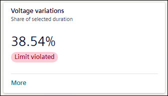
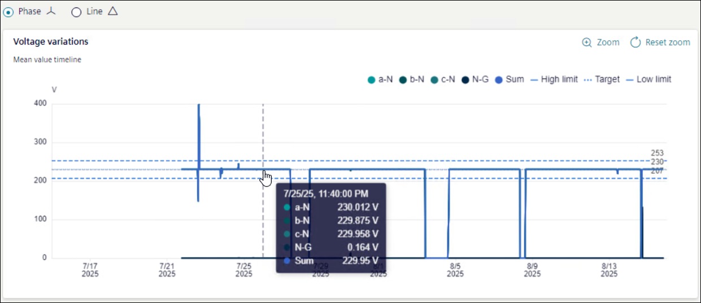

Voltage variations

Voltage variations tile shows the percentage of hours voltage variations occurred over the selected timeline. The tile shows the status of voltage variation as All Ok, Warning, or Limit Violated as per Grid code EN 50160.
To view further details of Voltage variations, click More.

For voltage variations graph, X-axis shows selected timeline and Y-axis shows Voltage. Hover mouse on graph to get more details.
Values of Operational value, Upper Limit, and Lower Limit are shown as a horizontal line on the graph and corresponding values are mentioned on right side of graph.
NOTE: Operational value is based on device configuration.
Select Phase or Line to filter the violations by group of phases. This function is available only for devices with 3- phase 4-wire connections.